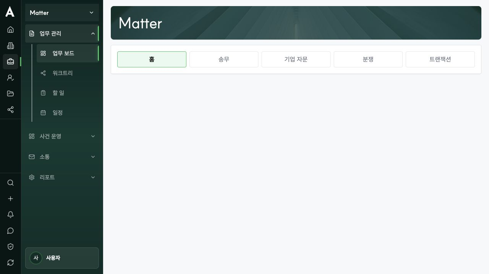
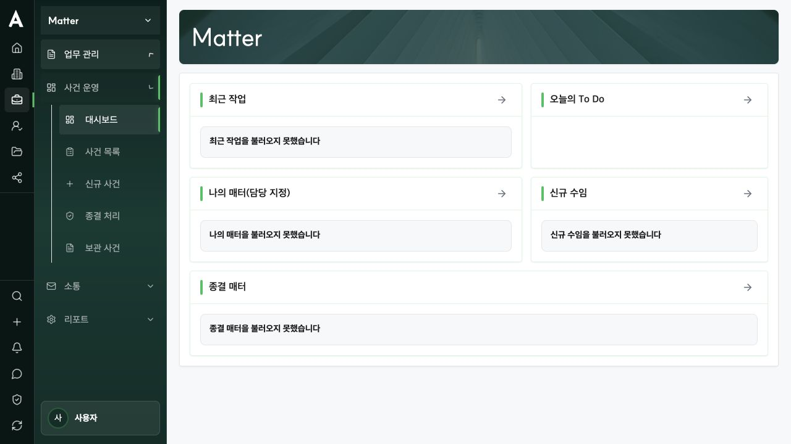
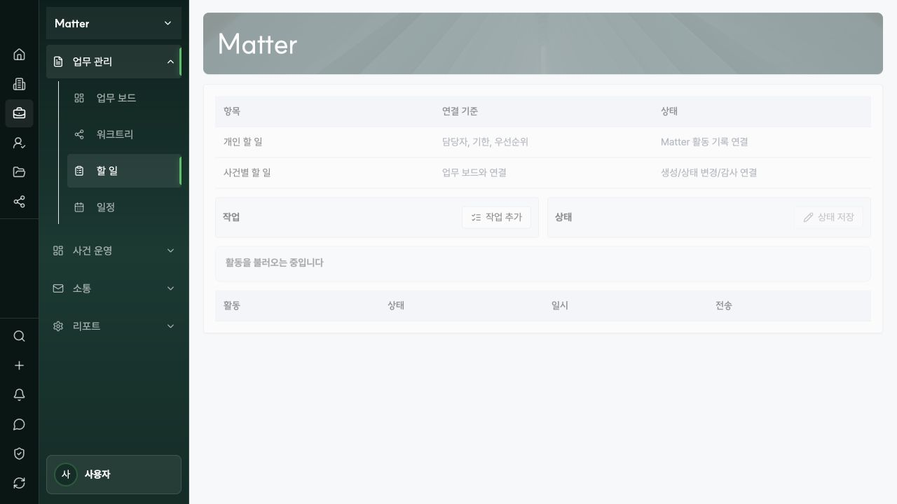
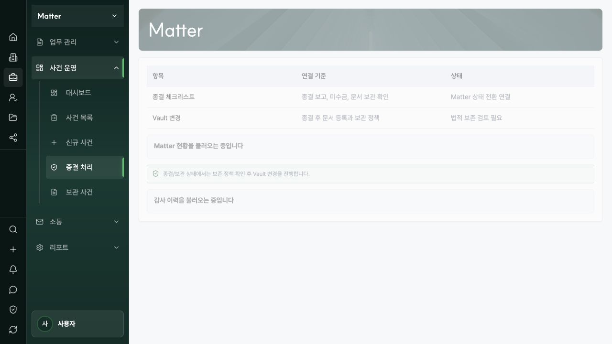
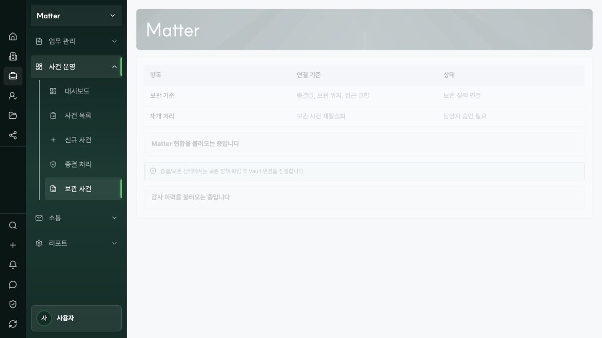
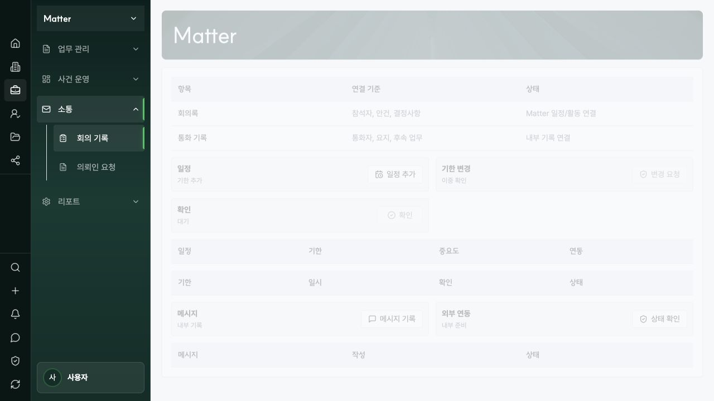
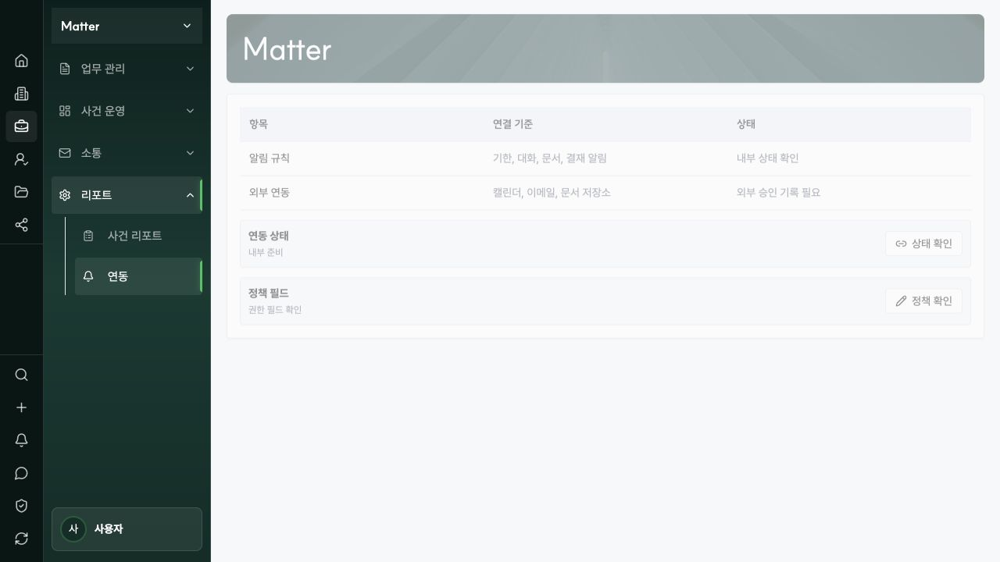
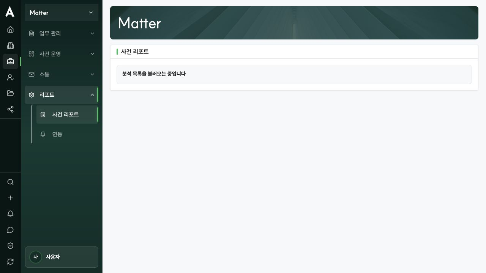
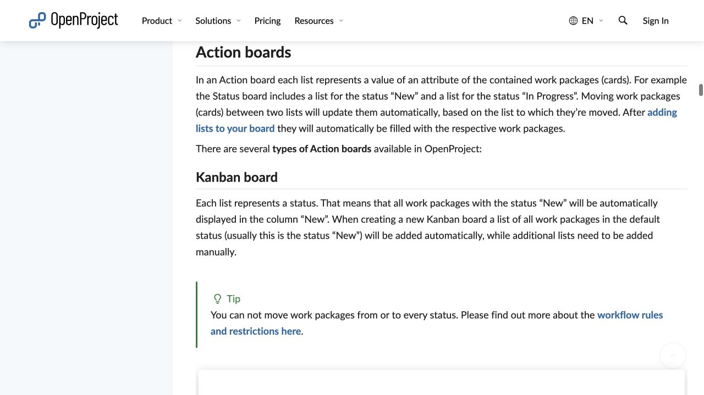
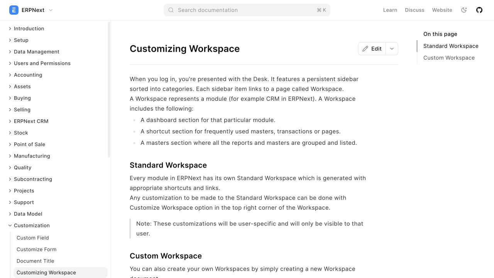

Matter 메뉴 구현 갭 · 중복 · OSS 코드 리서치
현재 13개 노출 메뉴를 실제 렌더링 화면, 현재 소스, 승인 대기 중인 제품 IA, 백엔드 도메인 계약과 대조했다. 빈 화면을 채우는 것보다 먼저 메뉴 소유권과 데이터 원장을 정리하는 실행안이다.
결론부터
- 소스 기준 핵심 구현 경로가 확인된 메뉴는 3개다: 사건 목록, 신규 사건, 워크트리. 이번 조사만으로 운영 영속성·권한 시나리오까지 완료됐다고 판정하지는 않는다.
- 4개는 데이터 경로가 있으나 화면·설계가 미완성이다: 대시보드, 할 일, 일정, 사건 리포트.
- 6개는 빈 화면 또는 설명용 조합에 가깝다: 업무 보드, 종결 처리, 보관 사건, 회의 기록, 의뢰인 요청, 연동.
- 현재 메뉴 13개를 그대로 구현하지 말고 10개로 정리한다. 종결은 사건 상세의 워크플로로, 보관은 사건 목록의 저장된 보기로, 연동 설정은 전역 설정으로 옮긴다.
- 새 Task 모델은 만들지 않는다. 할 일·워크트리는 이미 같은
MatterTask를 사용한다. 업무 큐와 보드는 같은 원장의 읽기 투영이어야 한다.
- 가장 명확한 결함
- 업무 보드의 기본 ‘홈’ 탭은 DOM상 빈
tabpanel만 렌더링한다. - 가장 큰 설계 갭
- Matter Home 11영역 중 ‘오늘의 할 일’만 부분 대응하고 10영역은 화면상 부재다.
- 가장 큰 중복
- 업무 보드의 비홈 탭은 업무 카드가 아니라 사건 목록을 분야별로 다시 보여준다.
- 가장 위험한 오해
- 연동·발송·게시 버튼이 있다는 사실은 외부 공급자 연결 또는 프로덕션 준비 완료를 뜻하지 않는다.
- 권장 우선순위
- IA 정리 → 단일 업무 원장 투영 → Matter Home 읽기 모델 → 종결/요청 상태기계 → 공급자 어댑터 순서.
현재 화면에서 확인한 증거
사이드바는 4개 그룹, 13개 메뉴를 노출한다. 구현 상태는 같은 수준이 아니다. 특히 업무 보드는 ‘홈’ 탭이 완전히 비어 있고, 종결·보관·회의·요청·연동은 정적인 설명 표 또는 범용 패널 조합이 화면의 대부분을 차지한다.
{kind=link}

{kind=link}

{kind=link}

{kind=link}

{kind=link}


{kind=link}

{kind=link}

{kind=link}

노출된 13개 메뉴 판정
‘구현’은 버튼 유무가 아니라 실제 데이터 원장, 상태 전이, 권한, 감사, 실패 상태까지 연결됐는지를 기준으로 판정했다.
| # | 메뉴 / 경로 | 현재 판정 | 현재 증거 | 설계 대비 갭 | 권장 조치 |
|---|---|---|---|---|---|
| 01 | 업무 보드matter-board |
빈 화면 | 기본 홈은 빈 패널. 나머지 탭은 송무·자문 등으로 필터한 사건 목록. | 업무 상태·담당자·기한을 움직이는 보드가 아니다. | 홈 탭 삭제. MatterTask 기반 상태 Kanban으로 교체. |
| 02 | 워크트리matter-worktree |
경로 확인 | 노드 CRUD, 업무 연결, 완료·재개·차단 해제, 버전·감사 계약이 존재. | 전용 보기로서는 타당. 업무 큐와 상태 표현을 맞춰야 함. | 유지. 노드는 구조, MatterTask는 단일 업무 원장으로 고정. |
| 03 | 할 일matter-tasks |
부분 구현 | 활동 서비스가 MatterTask 생성·수정·목록·타임라인을 처리. |
설계된 나의 업무·기한 초과·검토 필요·승인 요청의 4개 구간 부재. | 메뉴명을 업무 큐로 변경하고 기존 원장의 투영으로 구현. |
| 04 | 일정matter-calendar |
부분 구현 | 로컬 MatterCalendarEvent, 마감, 활동 타임라인 경로가 있음. |
외부 캘린더 자격증명·동기화 건강·재연결·읽기전용 상태가 분리되지 않음. | 로컬 일정을 정본으로 유지하고 공급자 연결 상태를 별도 표시. |
| 05 | 대시보드matter-home |
부분 구현 | 최근 작업·오늘 To Do·나의 매터·신규 수임·종결 매터 5개 목록. | Matter Home 11영역 중 오늘의 액션만 부분 대응. 선택 Matter 중심 화면도 아님. | 선택 사건의 Summary부터 Knowledge 후보까지 권한 인지 read model로 재구축. |
| 06 | 사건 목록matters-list |
경로 확인 | 실제 Matter 목록·선택·필터·상세 오버레이 경로. | 보관/종결이 별도 메뉴와 중복. | 유지. 활성·종결·보관을 저장된 보기로 통합. |
| 07 | 신규 사건matter-opening |
경로 확인 | 사건 생성·프로필·이해상충/당사자·상태 전이 계약과 연결. | 설계 단계와 실제 상태 enum을 계속 정합화할 필요. | 유지. 이해상충·수임 승인·필수 필드 게이트를 서버 기준으로 고정. |
| 08 | 종결 처리matter-closeout |
설명형 | 정적 체크리스트 표와 범용 생애주기 패널. | 미수금·법적 보존·문서 QC·승인·감사·후속 작업을 묶는 원자적 종결 계약 부재. | 사건 상세의 종결 워크플로로 이동. 차단 사유와 승인 증거를 저장. |
| 09 | 보관 사건matter-archive |
중복 | 종결 처리와 같은 LifecycleBoundaryPanel을 공유. |
보관은 독립 업무 공간보다 Matter 상태/보기의 성격이 강함. | 사건 목록의 ‘보관됨’ 저장 보기로 병합. 재활성화는 승인된 action으로 유지. |
| 10 | 회의 기록matter-meetings |
조합형 | Calendar 패널과 Channel 패널의 재사용. | 참석자·의제·결정·후속조치·회의록 버전이라는 고유 데이터가 없음. | 기본은 활동 기록의 meeting 유형으로 병합. 고유 계약이 필요할 때만 Meeting aggregate 추가. |
| 11 | 의뢰인 요청matter-client-requests |
조합형 | Channel 패널과 Approval 패널의 재사용. | 외부 요청자, 요청/응답 본문, SLA, 첨부, 공개 범위, Portal 소유권이 불명확. | 의뢰인 요청 검토로 명확화. 내부 검토는 Matter, 외부 응답은 Portal이 소유. |
| 12 | 사건 리포트matter-analytics |
부분 구현 | 분석 읽기 투영 경로는 있으나 캡처 시 로딩 상태가 지속. | 필터·기준시각·출처·정의·내보내기 증거가 약함. 전역 Reports와 역할 중복 가능. | Matter 범위의 고정 보고서만 유지하거나 Matter 조건이 적용된 전역 리포트 허브로 연결. |
| 13 | 연동matter-integrations |
설명형 | 연동 상태·정책 설명 카드. 공급자 연결 원장과 건강 상태가 보이지 않음. | 전역 Settings와 설정 소유권 중복. Matter별 binding과 전역 credential의 경계 부재. | 설정은 전역 Settings로 이동. Matter에는 연결 상태·마지막 동기화·재연결 action만 노출. |
MatterTask다. 워크트리 노드를 제거해도 업무 레코드는 유지하도록 이미 계약돼 있다.
구현 계획은 이 정본을 확장하는 대신 읽기 투영과 상태 vocabulary를 정리한다.
제품 설계 대비 핵심 갭
현재 릴리스 계획이 Wave 1 제품 UI로 명시한 화면군은 Matter Home, Work Queue, Document Workspace, Outlook Add-in Pane, Issue Ledger, Admin Console이다. 현재 사이드바 13개와 일대일 대응하지 않는다. 메뉴 수를 늘리기보다 이 6개 흐름을 끊김 없이 만드는 것이 우선이다.
Matter Home 11영역 대조
| IA 영역 | 현재 상태 | 필요 읽기 모델 / 경계 |
|---|---|---|
| MH-01 사건 요약 | 부재 | 선택 Matter의 의뢰인·상대방·유형·단계·담당·기밀도 |
| MH-02 오늘의 액션 | 부분 | MatterTask + 검토 + 승인 요청을 날짜·위험순으로 결합 |
| MH-03 중요 기한 | 부재 | 법원·제출·계약·의뢰인 응답 기한과 계산 근거 |
| MH-04 열린 이슈 | 부재 | Issue Ledger의 위험도·담당·다음 행동 |
| MH-05 최근 문서 | 부재 | Vault file_ref, 버전, 출처, QC 상태 |
| MH-06 최근 이메일 | 부재 | Outlook filing 완료 thread만, 보낸이/제목 권한 마스킹 |
| MH-07 의뢰인 대기 | 부재 | ClientRequest의 공개 가능한 상태·기한 |
| MH-08 상대방 대기 | 부재 | 협상/회신 blocker와 다음 확인일 |
| MH-09 AI 후보 | 부재 | Wave 1에서는 비대화형 dark-launch placeholder만 허용 |
| MH-10 청구·업무량 | 부재 | Matter 범위 시간·예산·팀 업무량; 권한별 금액 마스킹 |
| MH-11 지식 후보 | 부재 | 출처가 있는 지식 후보와 검토 상태 |
Work Queue 4개 구간 대조
현재 ‘할 일’은 활동 생성/목록이다. 설계는 다음 네 lane을 정확히 요구한다. HR 업무는 Wave 1에서 제외하며, 서버 성공 전 영구 optimistic mutation을 금지한다.
due_at < now. 재일정·차단·에스컬레이션.Matter Home · MAT-2026-014 [권한: allow] ──────────────────────────────────────────────────────────────────── 사건 요약 의뢰인 / 상대방 / 단계 / 담당 / 기밀도 [상세 열기] 중요 기한 07.31 답변서 · D-1 08.05 기일 · D-6 오늘의 액션 □ 증거목록 검토 □ 의뢰인 확인 요청 열린 이슈 HIGH 관할 이슈 MEDIUM 손해액 산정 ──────────────────────────────────────────────────────────────────── 최근 문서 최근 이메일 대기: 의뢰인 2 / 상대방 1 청구·업무량 지식 후보 AI 후보: Wave 1 비활성 업무 큐 ──────────────────────────────────────────────────────────────────── [나의 업무 12] [기한 초과 3] [검토 필요 4] [승인 요청 2] 상태 업무 사건 담당 기한 다음 작업 차단 증거목록 정리 MAT-014 김변호사 오늘 [차단 해제] 검토 계약서 초안 MAT-021 박변호사 내일 [검토 열기]
기능·메뉴 중복 감사
중복은 단순히 이름이 비슷한지를 보지 않고, 같은 데이터의 정본과 같은 사용자 결정을 두 화면이 소유하는지로 판단했다.
| 겹치는 표면 | 판정 | 소유권 결정 |
|---|---|---|
| 업무 보드 ‘홈’ ↔ 대시보드 | 삭제 | 대시보드가 Matter Home을 소유. 보드의 빈 홈 탭은 삭제. |
| 업무 보드 분야 탭 ↔ 사건 목록 | 재정의 | 사건 분류 목록은 사건 목록의 저장된 보기. 업무 보드는 MatterTask 상태 보드. |
| 할 일 ↔ 워크트리 업무 | 정상 공유 | 이미 단일 MatterTask. 할 일은 queue, 워크트리는 구조적 placement만 소유. |
| 종결 처리 ↔ 보관 사건 ↔ 사건 목록 | 병합 | 종결은 사건 상세 작업, 보관은 상태/저장된 보기, 목록은 탐색을 소유. |
| 회의 기록 ↔ 일정 ↔ 활동/채널 | 기본 병합 | 회의는 활동의 유형. 참석자·결정·후속조치가 법적 기록으로 요구될 때만 전용 aggregate. |
| 의뢰인 요청 ↔ Portal 요청 | 경계 명확화 | Matter는 내부 검토/배정, Portal은 외부 작성·응답·첨부·수신 확인. |
| 사건 리포트 ↔ 전역 Reports | 범위 분리 | Matter에는 고정된 사건 보고서만. 임의 분석/빌더/포트폴리오는 전역 Reports. |
| 연동 ↔ 전역 Settings | 이동 | credential·scope·webhook은 전역 Settings. Matter는 binding/health만 읽음. |
| 숨은 증거·양식 경로 ↔ Vault | 연결 경로 | 문서 원본·버전·검색은 Vault 정본. Matter-filtered Vault로 이동하는 단축 경로만 허용. |
| Matter 일정/할 일 ↔ Home 요약 | 정상 투영 | Matter가 쓰기를 소유하고 Home은 집계 읽기만 소유. |
| Matter 팀 ↔ People | 정상 분리 | People은 인력/가용성 정본, Matter 팀은 사건별 staffing·접근 범위. |
권장 Matter 정보구조: 13개 → 10개
최상위 메뉴는 사용자가 매일 반복하는 목적을 기준으로 남긴다. 상태 전이 action과 저장된 보기는 메뉴로 승격하지 않는다.
| 그룹 | 권장 메뉴 | 소유 데이터 / 역할 | 기존 메뉴 처리 |
|---|---|---|---|
| 업무 | Matter 홈 | 11영역 권한 인지 읽기 모델 | 대시보드 재구축 |
| 업무 큐 | MatterTask + 검토/승인 투영 | 할 일 이름·구조 변경 | |
| 업무 보드 | MatterTask 상태 Kanban | 빈 홈과 사건 분류 탭 제거 | |
| 워크트리 | 업무의 구조적 placement | 유지 | |
| 일정 | 로컬 일정·기한 + 공급자 동기화 상태 | 유지·연동 상태 보강 | |
| 사건 | 사건 목록 | 활성/종결/보관 저장 보기 | 보관 사건 병합 |
| 신규 사건 | 이해상충·수임 승인·프로필 | 유지 | |
| 소통 | 활동 기록 | 회의·통화·이메일 기록·결정·후속조치 | 회의 기록 병합 |
| 의뢰인 요청 검토 | 내부 배정·SLA·승인, Portal 연결 | 이름·경계 변경 | |
| 리포트 | 사건 리포트 | 고정 정의·출처·기준시각이 있는 Matter 투영 | 유지 또는 Matter 조건이 적용된 전역 Reports 연결 |
Matter ├─ 업무 │ ├─ Matter 홈 │ ├─ 업무 큐 │ ├─ 업무 보드 │ ├─ 워크트리 │ └─ 일정 ├─ 사건 │ ├─ 사건 목록 [활성 | 종결 | 보관] │ └─ 신규 사건 ├─ 소통 │ ├─ 활동 기록 [회의 | 통화 | 이메일 | 결정] │ └─ 의뢰인 요청 검토 → 외부 응답은 Portal └─ 리포트 └─ 사건 리포트 사건 상세 작업: [종결 시작] [재활성화] [Vault 열기] [연동 상태] 전역 소유: Vault · Portal · Settings/Integrations · Reports
오픈소스 SaaS 코드 리서치
화면 모양이 아니라 상태 모델, 권한 경계, 동기화 실패, 감사 이벤트가 실제 코드에서 어떻게 분리되는지를 조사했다. 아래 패턴은 현재 Law Firm OS 도메인에 맞춰 재구현해야 하며, copyleft 저장소 코드를 직접 복사하지 않는다.
| 현재 갭 | 검토한 OSS 코드 패턴 | 채택할 설계 | 복사하지 않을 것 / 주의 |
|---|---|---|---|
| 업무 큐·보드 | Plane Issue 상태·보관 필드, OpenProject WorkPackage open/closed/overdue | 단일 업무 원장, 의미 기반 상태군, 보관과 완료 분리, 서버 상태 규칙이 허용할 때만 끌어놓기. | Plane AGPL, OpenProject GPL. UI/코드 복사 금지; 행위와 테스트 계약만 참고. |
| Matter Home·보고서 | Frappe Workspace 구성, 권한 검증 report view | 영역 정의는 구성 가능하되 모든 query에 허용 field/filter를 서버에서 검증. 기준시각·출처·정의를 함께 표시. | 사용자 정의 dashboard가 permission kernel을 우회하지 않도록 제한. |
| 활동·회의·의뢰인 요청 | Chatwoot internal message와 delivery 상태, typed activity event | 내부/외부 공개 범위, 요청 상태, SLA, 담당, 공급자 전달 상태를 별도 필드로 관리. 변경은 유형화된 감사 이벤트. | 단일 private boolean에 윤리장벽을 맡기지 않음. 외부 메시지의 hard delete 금지. |
| 사건 상세 활동·저장된 보기 | Twenty 정본 레코드 타임라인, saved view filter persistence | matter_id 정본 타임라인, 중복 판정, 활성/종결/보관 저장 보기. |
Twenty core는 AGPL. enterprise-marked 코드는 별도 상용 조건 확인. |
| 일정·연동 상태 | Cal.com 선택 캘린더 동기화 상태, revoked/invalid credential 오류 | 로컬 일정과 credential, selected/destination calendar, cursor, last success/error, retry를 분리. | ‘연동됨’ 한 단어로 건강 상태를 뭉개지 않음. revoked·expired·read-only를 명시. |
| 종결·승인·감사 | Documenso 문서 상태, 트랜잭션과 감사 기록 | 역할 기반 승인, 상태기계, 감사, commit 이후 outbox/webhook. 종결 체크는 하나의 boolean이 아님. | AGPL 코드 복사 금지. 전자서명 모델을 사건 종결에 그대로 전용하지 않음. |
| 법률 사건 맥락 | ArkCase 사례관리 구성, OpenLawOffice matter taxonomy | 참여자 역할, note provenance, 이해상충, 감사 vocabulary만 비교 기준으로 사용. | ArkCase는 무거운 구형 스택, OpenLawOffice는 2016년 이후 정체. 제품 기반으로 채택하지 않음. |
외부 화면에서 확인한 동작 원칙
{kind=link}


{kind=link}

구현 계획
새 메뉴를 하나씩 독립 구현하면 동일한 업무·활동·권한 로직이 다시 갈라진다. 아래 순서는 정보구조와 정본을 먼저 고정하고, 같은 데이터에서 여러 화면을 안전하게 만드는 순서다.
2–3일
정보구조와 소유권 고정
작업: 13→10 메뉴 결정, 숨은 19개 경로를 유지·연결·이동·제거로 분류, 빈 보드 홈 제거, 종결·보관·연동 위치 변경.
산출물: 경로 이동표, 화면-도메인 소유권 표, 기존 URL 이동 테스트.
게이트: 각 최상위 메뉴가 하나의 사용자 목적과 하나의 정본 소유자를 가져야 한다.
1 sprint
도메인·읽기 투영 정리
재사용: 기존 MatterTask, MatterCalendarEvent, Activity/Channel, Worktree, Audit repository.
추가: MatterHomeProjection, WorkQueueProjection, ClientRequest, MatterCloseoutChecklist, IntegrationConnectionHealth.
원칙: 보드/큐/워크트리는 동일 Task ID와 상태를 사용한다. Worktree node는 task placement일 뿐 복제본이 아니다.
게이트: tenant → matter membership/Ethical Wall → field permission을 query 이전에 검사하고 count leak을 막는다.
1 sprint
핵심 화면 구현
Matter Home: T03 core 5(요약·오늘 액션·기한·이슈·문서)부터 구현하고 collaboration 6을 뒤이어 연결.
Work Queue: 정확히 4개 구간. HR 업무 제외. 서버 성공 뒤 갱신하며 실패 시 이전 상태 유지.
Work Board: 상태 열과 담당/기한 필터, workflow가 허용한 이동만 제공. 사건 분야는 filter로만 제공.
종결: 사건 상세 drawer에서 미수금·법적 보존·문서 QC·의뢰인 보고·승인을 통과해야 종료.
1 sprint
소통·리포트·공급자 경계
활동: 회의·통화·이메일·결정을 typed activity로 기록하고 correction event로 정정.
의뢰인 요청: Matter 내부 review와 Portal 외부 response를 source_ref로 연결하되 접근 경계를 공유하지 않음.
리포트: 정의·분모·기준시각·출처·제외 조건이 있는 고정 투영.
연동: credential, scope, webhook, cursor, last success/error, retry를 전역 Settings에서 소유. Matter는 상태만 투영.
gate
보안·감사·실사용 수락
상태: loading, empty, error, denied, review_required를 서로 다른 UI로 검증. 무한 loading 금지.
쓰기: idempotency key, non-bypassable audit, after-commit outbox, partial failure rollback.
표면 QA: 실제 로그인 사용자, 제한 Matter, 종결/재활성화, 공급자 credential 만료, Portal 왕복을 staging에서 실행.
출시 경계: 로컬/합성 데이터 green을 배포·공급자·프로덕션 준비 완료로 승격하지 않는다.
종결·보관 권장 상태 흐름
ACTIVE │ [종결 시작: reason + expected_version] ▼ CLOSEOUT_IN_PROGRESS ├─ 문서 QC 미완료 ───────────────┐ ├─ 미수금 정책 미충족 ──────────┤ → BLOCKED(reason_codes[]) ├─ legal hold / 보존 검토 ──────┤ └─ 의뢰인 종결 보고 미완료 ─────┘ │ 모든 gate + 승인 + audit receipt ▼ CLOSED ── retention policy 적용 ──▶ ARCHIVED_VIEW │ └─ [재활성화 요청] → 승인 + 사유 + audit → ACTIVE 외부 알림·webhook·문서 이동은 commit 이후 outbox가 처리한다.
의뢰인 요청 권장 경계
Portal (외부 actor) Matter (내부 actor) ────────────────── ───────────────────────── 요청 열람/응답/첨부 ───────▶ 요청 검토·담당 배정·SLA 수신 확인 ◀────── 승인된 공개 응답 공유 키: request_id, matter_id, source_ref, public_status 분리 필드: internal_note, reviewer, permission_state, provider_delivery_state 금지: 내부 note의 Portal 노출 / 외부 actor를 내부 author로 치환 / hard delete
구현 완료 수용 기준
- 빈 경로 0개. 모든 노출 메뉴는 불러오는 중·비어 있음·오류·권한 없음·검토 필요·준비 완료 중 하나를 명시적으로 렌더링한다.
- 업무 정본 1개. 큐·보드·워크트리에서 동일 task ID를 열고, 한 화면의 완료가 나머지 두 화면에 반영된다.
- Work Queue 정확히 4개 구간. HR 민감 업무는 결과에 섞여도 UI가 차단하고 발견 사항을 기록한다.
- Matter Home 11영역. 각 영역은 source status와 permission state를 가지며, denied/review_required에서 값과 count를 누출하지 않는다.
- 종결은 원자적 상태 전이. 문서 QC, 미수금 정책, 보존/법적 hold, 의뢰인 보고, 승인 중 하나라도 실패하면 closed가 되지 않는다.
- 보관은 보기. 별도 복제 테이블 없이
archived_at/상태와 저장된 filter로 탐색한다. - 외부 연동은 정직한 상태. connected, read-only, expired, revoked, retrying, failed를 구분하고 마지막 성공/오류 시각을 표시한다.
- 감사와 재시도. 모든 성공한 쓰기는 idempotent audit receipt를 남기고 외부 부작용은 outbox로 재시도한다.
- 실화면 QA. 제한 사용자·Ethical Wall·종결/재활성화·Portal 왕복·credential 만료를 실제 staging 화면에서 재현한다.
- 회귀 게이트. 경로 이동, 권한 정보 비누출, 상태 전이, 새로고침/재시작 영속, 키보드/초점 접근성, 한국어 문구를 자동·수동으로 확인한다.
근거와 출처
소스 링크는 조사 시점 SHA에 고정했다. 로컬 제품 문서 중 Matter Home·Work Queue IA는
draft_completed_pending_l1_w01_scope_decision 상태이므로 구현 기준으로 유용하지만 최종 책임자 범위 승인 전제다.
Law Firm OS 현재 소스·설계
업무·보드·워크스페이스 OSS
- Plane Issue model, archive query default, AGPL-3.0.
- OpenProject WorkPackage scopes, availability/capacity, GPLv3.
- Frappe workflow transition, permission-aware activity timeline, MIT.
- ERPNext Issue Analytics, GPLv3.
- Twenty TimelineActivity, duplicate merge UI, AGPL core.
소통·연동·승인 OSS
- Chatwoot Conversation status/priority, attachment validation, MIT core.
- Cal.com credential/destination calendar, retry processor, MIT.
- Documenso recipient role/order, completion audit/webhook/job, AGPL.
법률 사례관리 비교
- ArkCase architecture/readme, audit transaction boundary, LGPL-3.0.
- OpenLawOffice conflicts feature taxonomy, Apache-2.0, 2016년의 역사적 비교 자료.
- Casebox는 archived 상태이며 명확한 도입용 라이선스 근거가 부족해 구현 후보에서 제외.